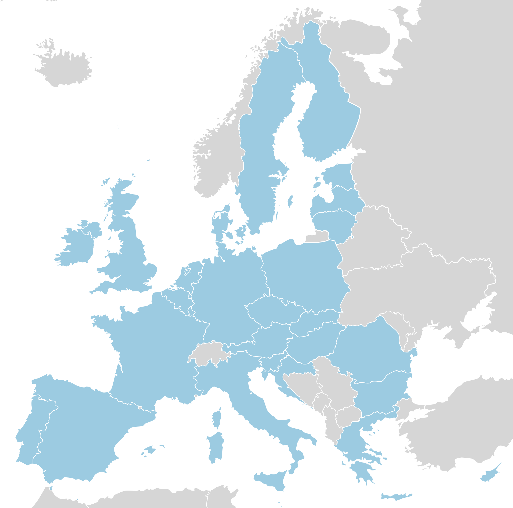

Pseudonymization
Techniques in Python
What is pseudonymization?
a data de-identification procedure
data records are replaced by one or more artificial identifiers called pseudonyms
pseudonyms make a data record less identifiable without sacrificing data analysis and processing
Why would you do this?
protect user identities
secure a dataset from identification
🚨 GDPR 🚨
We've Updated Our Privacy Policy
IANAL
I am not a lawyer.
General Data Protection Regulation (GDPR)
A new set of EU-based policies about how companies can collect and use consumer data. GDPR passed in 2016, but that included a waiting period for companies to adjust.
May 25, 2018
The Rules
Lawfulness, Fairness and Transparency
Purpose Limitation
Data Minimization
Accuracy
Storage Limitation
Integrity and Transparency
Personal Data
GDPR sets a broad definition of what constitutes personal data.
Any information that is owned by an individual, or that could identify a user, is now off-limits for most purposes without proper consent.
Personal Data (examples)
- Full Names
- Home Addresses
- Email Addresses
- Telephone Numbers
- DOB and/or Birthplace
- any Identification Numbers
(e.g. Driver's License, Passport, etc.)
Who does this effect?
Countries in the European Union (EU) ...actually 🤔 
Long-Arm Jurisdiction
Article 3(1) "applies to the processing of personal data in the context of the activities of an establishment of a controller or a processor in the Union, regardless of whether the processing takes place in the Union or not"
Data Privacy Techniques
🎉 no more legal stuff 🎉
Two Popular Methods
PSEUDONYMIZATION
ANONYMIZATION
PSEUDONYMIZATION
An approach for treating personal data so that it cannot be used to identify individual users without the use of additional information. Most techniques involve replacing data with a placeholder value, or pseudonym. This pseudonym may be a masked version of a record or a token used for retrieving the original value.
Recommended by GDPR
ANONYMIZATION
A permanent de-identification of a data set so that no party will be able to identify the individuals in reference no matter what additional data they possess. Since anonymized data cannot be used to identify any individual, it is no longer considered personal data and as such does not fall under the purview of GDPR.
Pseudonymization Techniques
Data Masking
altering or replacing a record or part of a record without changing its format. For example, an unmasked social security number (SSN) might be stored as
679-69-8549,
but a masked SSN using a technique to substitute the digits might look like
145-126-7741.
Approximation
a technique for replacing specific personal data with less specific values. For example, if a user's date of birth is August 20, 1997, then an approximated record might be stored as July 1- September 25, 1997, or even just 1997..
Encryption
a cryptographic process that converts data into an unreadable format (ciphertext) so that only individuals or systems with access to the appropriate key can decrypt and read it.
No. Not mandatory according to GDPR
Tokenization
tokenizing a piece of data is to replace it with a unique token that acts as a stand-in which can be used to retrieve the original value.
Simple Implementation Example
Python already supports a common pattern that allows an engineer to replace a attribute with a set of methods that can intercept values as they're written and read.
either getter/setter or properties
For the following examples we'll use an overly simplified data masking and unmasking algorithm
def shift(string, reverse=False):
"""Shift ord value of character within range."""
new_string = []
for char in string:
try:
value = ord(char)
if value in range(ord('A'), ord('Z') + 1):
min = ord('A')
max = ord('Z')
elif value in range(ord('a'), ord('z') + 1):
min = ord('a')
max = ord('z')
values = range(min, max + 1)
if reverse:
index = values.index(value) - 1
else:
index = values.index(value) + 1
new_string.append(chr(values[index % len(values)]))
except:
new_string.append(char)
return ''.join(new_string)
then to mask and unmask...
def mask(value):
return shift(value)
def unmask(value):
return shift(value, True)
looks something like:
$ python simple.py Frank Valcarcel
MASKING "Frank Valcarcel"
MASKED "Gsbol Wbmdbsdfm"
UNMASKED "Frank Valcarcel"
Simple Implementation Example
getter/setter
class User:
def __init__(self):
self._name = None
@property
def name(self):
return self._name
@name.setter
def name(self, value):
self._name = value
looks something like:
$ python
>>> user = User()
>>> user.name = "Frank Valcarcel"
>>> print(f'user.name => {user.name}')
user.name => Frank Valcarcel
>>> print(f'user._name => {user._name}')
user._name => Gsbol Wbmdbsdfm
django Example
A Simple django User Model
from django.db import models
from django.contrib.auth.models import AbstractUser
class User(AbstractUser):
name = models.CharField(max_length=128, blank=True)
phone = models.CharField(max_length=17, blank=True)
date_of_birth = models.DateField(blank=True, null=True)
ip_address = models.GenericIPAddressField(blank=True, null=True)
which fields are personal data?
ALL OF THEM
utils.py
def shift(string, reverse=False):
"""Shift ord value of character within range."""
new_string = []
for char in string:
try:
value = ord(char)...
new_string.append(chr(values[index % len(values)]))
except:
new_string.append(char)
return ''.join(new_string)
def mask(value):
return shift(value)
def unmask(value):
return shift(value, True)
Updated user/models.py
from django.db import models
from django.contrib.auth.models import AbstractUser
from app.utils import mask, unmask
class User(AbstractUser):
_name = models.CharField(max_length=128, blank=True)
@property
def name(self):
return unmask(self._name)
@name.setter
def name(self, value):
self._name = mask(value)
Are we done?

Checklist
☐ Update the QuerySet
☐ Exclude pseudonyms
☐ Update django-admin
Update the QuerySet (1)
as defined, our model can not be queried using any of the unmasked values. e.g. we can not call methods like: User.objects.filter(name='Frank')
to get this working, we're going to overide our model's QuerySet, more specifically the _filter_or_exclude method
Update the QuerySet (2)
let's look at the source code... django.db.models.query
Update the QuerySet (3)
so let's just insert our masked values in, and super the parent instance of models.QuerySet for everything else
Update the QuerySet (4)
class UserQuerySet(models.QuerySet):
def _filter_or_exclude(self, negate, *args, **kwargs):
masked_fields = ['name']
for field in masked_fields:
value = kwargs.pop(field, None)
if value is not None:
kwargs['_{}'.format(field)] = mask(value)
return super(UserQuerySet, self)._filter_or_exclude(negate, *args, **kwargs)
Update the QuerySet (5)
To finish this, we override the BaseUserManager.get_queryset
class UserManager(BaseUserManager):
def get_queryset(self):
return UserQuerySet(self.model)
class User(AbstractUser):
...
objects = UserManager()
✅ User.objects.filter(name='Frank')
✅ User.objects.exclude(name='Frank')
Checklist
☑️ Update the QuerySet
☐ Exclude pseudonyms
☐ Update django-admin